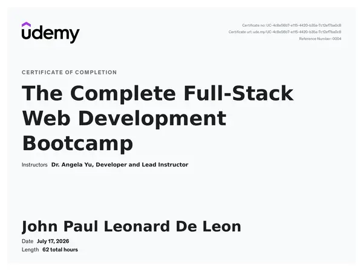

John Paul De Leon
I'm a
SEO background meeting web development. I'm building technical depth through hands-on projects and certifications, combining strategic thinking with code.
John Paul De Leon
SEO Specialist & Developer
Get to Know Me
Building things with SEO in mind
I started in SEO doing link prospecting, which was fine but incomplete. I kept wondering what the bigger picture of SEO actually was. I was always curious about the tools and the numbers I kept seeing on the sheets we worked with. Then I found Technical SEO and suddenly remembered I had a background in HTML, CSS, and JavaScript from college. That curiosity pulled me deeper. I explored web development through a full-stack bootcamp because I realized the technical side was relevant, not separate. Now I'm cycling back to SEO with that technical foundation. Understanding how things connect, that's what drives me.
Specialization
Technical SEO, SEO, WordPress Development
Experience Level
Mid-level
Education
ICT, SEO, Technical SEO, Full Stack Web Development
Languages
English, Filipino
Years in Link Prospecting & Research
Years Professional
Certifications
Projects handled
Skills
Technical SEO background meeting web development skills. Hands-on experience in strategy, WordPress, and full-stack projects.
SEO
Technical SEO
Learned through certification course and hands-on projects
On-Page SEO
Practical experience optimizing WordPress projects
Off-Page SEO
5+ years link research, prospecting, qualification, and vetting
Web Development
Web Development
Full-stack bootcamp with capstone projects
WordPress Development
Built and practiced multiple projects on LocalWP
Creative & Media Tools
Process automation, self-taught: DaVinci Resolve Studio, Photoshop,
Lightroom
Resume
A quick look at where I've worked, studied, and what I've picked up along the way.
Professional Summary
SEO Specialist with 5 years of experience focused on link prospecting, backlink research, and outreach across Intelligent.com LLC and Awisee. Recently expanded into technical SEO through hands-on web development training and certification, bringing a growing ability to understand and improve websites from the code level, not just around it. Detail-focused and research-driven, with a genuine commitment to SEO as a long-term career.
Contact Information
- Metro Manila, Philippines
- jpleonard.deleon@gmail.com
- +63 976 010 9942
- linkedin.com/in/jpldl/
Technical Skills
SEO Expertise
- Technical SEO
- On-Page SEO
- Off-Page SEO
- Site Architecture
- Core Web Vitals
- Performance Optimization
Web Development
- HTML
- CSS
- Bootstrap
- JavaScript
- Node.js
- Express.js
- Responsive Design
- Git/GitHub
- Semantic HTML
WordPress Development
- Elementor
- WooCommerce
- Rank Math
- Yoast SEO
- WPForms
- WP Optimize
- Theme Customization
Tools & Analytics
- Google Analytics
- Screaming Frog
- SEMrush
- Google Search Console
- Looker Studio
- RustySEO
Creative & Media Tools
- DaVinci Resolve Studio
- Adobe Photoshop
- Adobe Lightroom
Professional Experience
Self-Directed Learning & Upskilling
May 2025 - Present
- Completed the Complete Full-Stack Web Development Bootcamp
- Completed Technical SEO and SEO Sprint certification
- Practiced technical SEO through hands-on projects
- Practiced WordPress development and site building
- Built web app and other capstone projects
SEO Outreach Specialist
Jan - May 2025
Awisee
Remote, Stockholm, Sweden
- Built and verified prospect lists that directly enabled the team's link-building campaigns to run smoothly, reducing time spent on manual list-building
- Cleaned and organized lead data, sharpening outreach targeting so campaigns reached more relevant, higher-quality contacts
- Identified opportunities to streamline the prospect list workflow and proposed process improvements to the team
Research Analyst (SEO Link Prospecting)
Nov 2020 - Sept 2024
Intelligent.com LLC
Remote, Seattle, WA
- Created research specs to guide the US and outreach teams' link prospecting for relevant campaigns
- Consistently built monthly prospect lists that met and sustained monthly and yearly outreach quotas
- Sourced high-quality backlink opportunities that supported the outreach team's campaign performance
- Maintained and troubleshot link and email databases, ensuring accuracy and campaign readiness
- Built a personal script to streamline research workflow, improving consistency and output quality
- Collaborated with team leaders to clarify research specs and align prospecting with campaign goals
- Trusted to pilot link prospecting strategy for new client accounts
Contact Finder (SEO Contact Research & Verification)
May 2020 - November 2020
Intelligent.com LLC
Remote, Seattle, WA
- Researched and verified high-quality leads for SEO link-building outreach
- Consistently met daily and monthly quotas under tight deadlines
- Applied consistent qualification criteria that reduced wasted outreach effort on low-authority or irrelevant sites
- Shared research and verification techniques with colleagues, helping streamline the team's workflow
- Promoted to Research Analyst after building a strong track record in this role
Freelance Research Consultant (Independent / Referral-based)
January 2019 - May 2020
- Delivered lead generation projects for outsourced clients through professional referrals
- Performed web scraping and data entry to build and organize prospect/contact lists
- Maintained accuracy and consistency across client-provided data sets
Research Analyst (Web Researcher)
Sep 2013 - November 2018
Straive (formerly SPi Global)
On-site, Philippines
- Built an automation solution that helped the team win a Lean Six Sigma Award and elevated the status of the account/project
- Consistently met quota and deadlines throughout tenure
- Trusted to pilot several new projects/accounts, successfully onboarding and acquiring them for the team
- Shared research and verification techniques with colleagues, helping streamline the team's workflow
- Stepped in to lead and manage other teams during critical, deadline-driven periods
- Expanded beyond primary duties by taking on overtime work for other accounts
Education
B.S. Marine Engineering
2009 - 2013
Philippine Merchant Marine School
A.S. Information & Communication Technology
2006 - 2008
IETI
Certifications
The Complete Full-Stack Web Development Bootcamp
Udemy
2026
Technical SEO and SEO Sprint
SEO Workout by Gab Valimento
2025
Portfolio
Learning through building. These projects show my journey from bootcamp to hands-on SEO and WordPress work.
No client work yet, but solid foundations.



{kind=link}
{kind=link}
{kind=link}
{kind=link}
{kind=link}